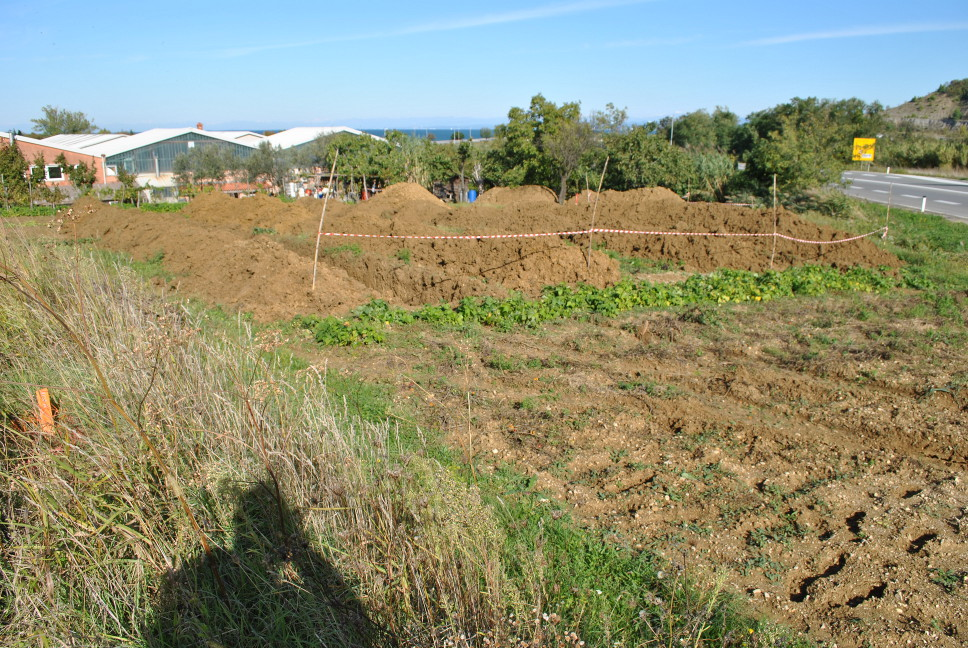

Izola
Lokacija/območje: Izola, OPPN CMI Vzhod
Naročnik: Občina Izola
Leto: 2015
Projekt: Predhodna arheološka raziskava; intenziven terenski pregled zaprtih, mestoma odprtih površin na skupni površini 2,3 ha v mreži zbiralnih enot 10 m x 10 m in arheološki izkop in dokumentiranje strojnih testnih jarkov na skupni površini 780 m². Skupna dolžina testnih jarkov je znašala 493 m. Na zahtevnem in razgibanem območju se nahajajo njive, travniki in v večjem delu tudi vinograd.

